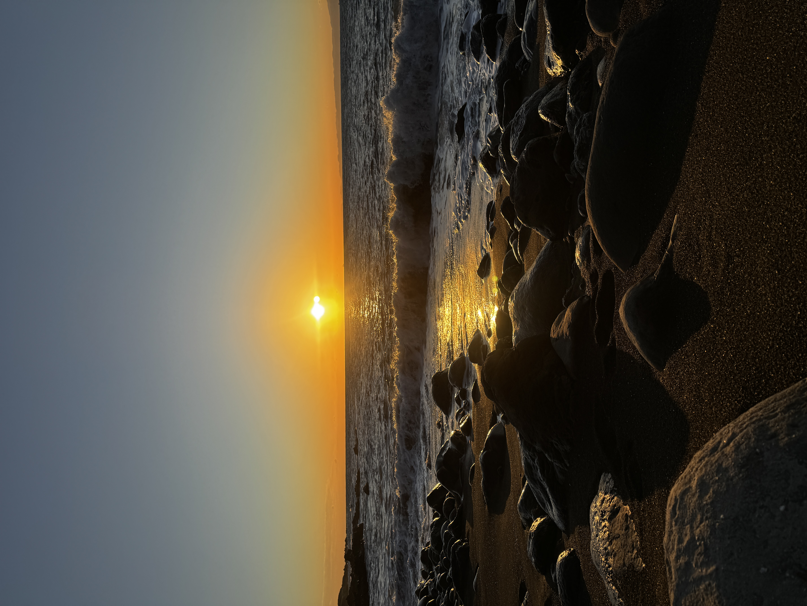

Access
アクセス
伊豆大島は、東京の離島です。伊豆七島の、いちばん初めの島。
交通は、船と飛行機のみ。海を渡って、お越しください。
竹芝から ―― 東京
- 大型客船（東海汽船）／夜、竹芝桟橋を出航し、朝、大島へ。所要およそ六時間の、夜行便。
- 高速ジェット船（東海汽船）／竹芝桟橋から、およそ一時間四十五分。
熱海から ―― 静岡
- 高速ジェット船（東海汽船）／熱海港から大島まで、およそ四十五分〜一時間。伊豆半島から、最も近い航路。
調布から ―― 飛行機
- 新中央航空／調布飛行場から大島空港まで、およそ二十五分。空から島へ渡る、最短の経路。
島での移動には、レンタカーのご利用が便利です。
港・空港からフィールドまでの経路は、ご予約後に個別にご案内します。
Information
施設情報
- 施設名
籠 —RAW—
- 所在地
東京都大島町岡田小堀
- お問い合わせ
お問い合わせフォームよりご連絡ください。